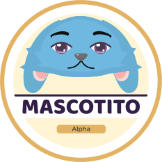
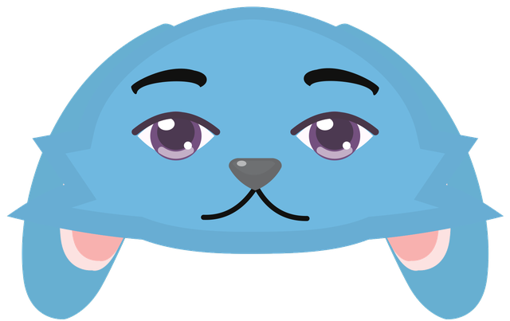
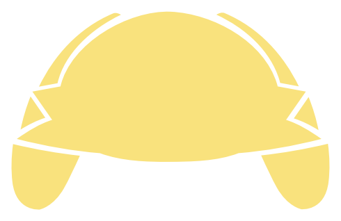
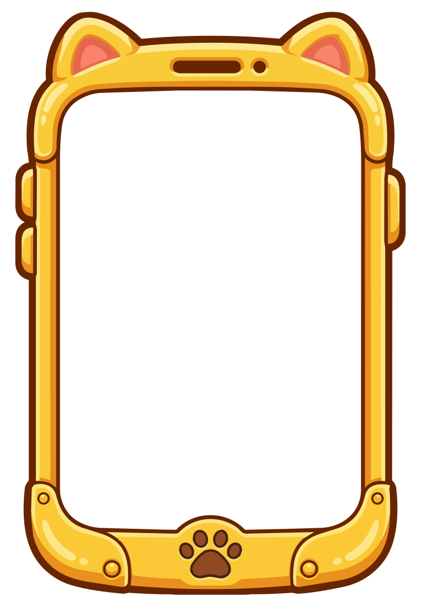

¿Quién sos?
Usuario y PIN de 4 dígitos para vos y tus amigos. Si el usuario todavía no existe, se crea solo con ese PIN.
o

Mascotito Beta v4.3.2
Usuario y PIN de 4 dígitos para vos y tus amigos. Si el usuario todavía no existe, se crea solo con ese PIN.

Preparando el escenario...
No tenés amigos agregados todavía.
No hay mensajes todavía.
Elegí un objeto y tocá la casa para colocarlo. Podés arrastrar los objetos ya colocados.
El nombre debe tener al menos 2 caracteres.